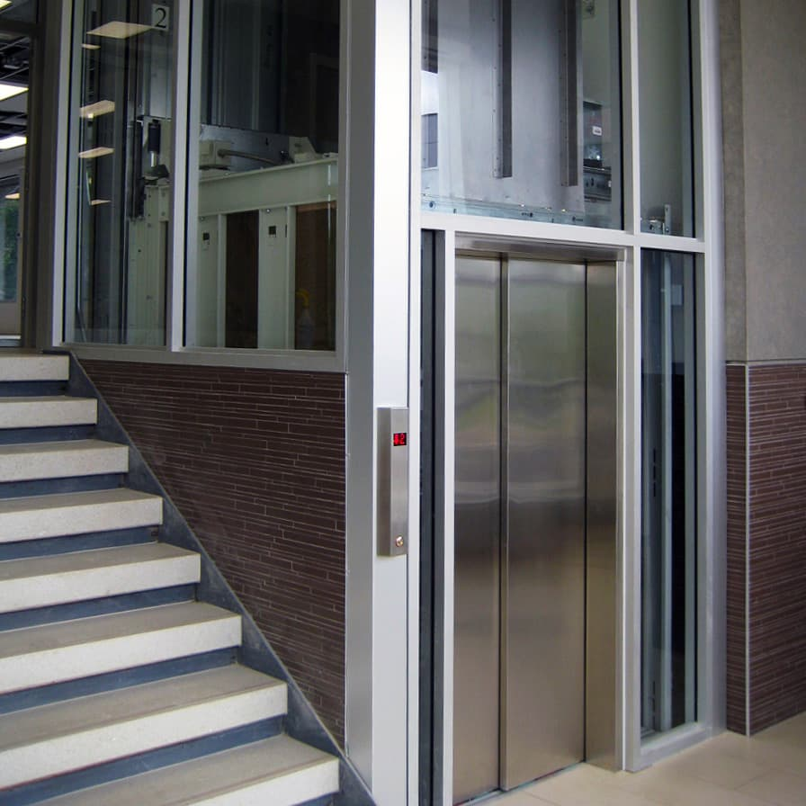
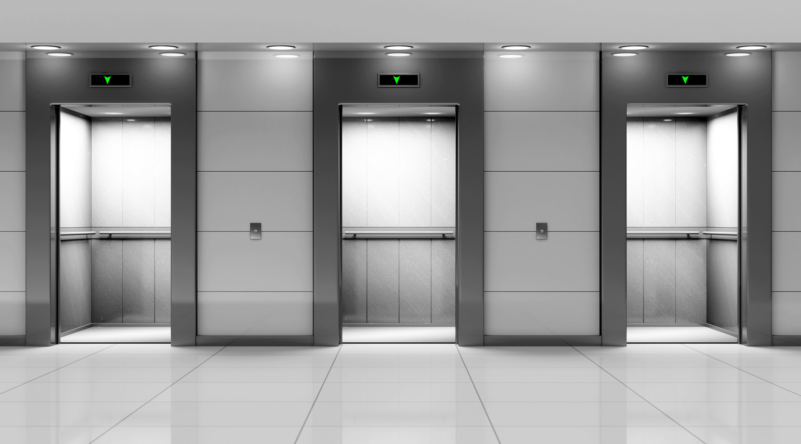
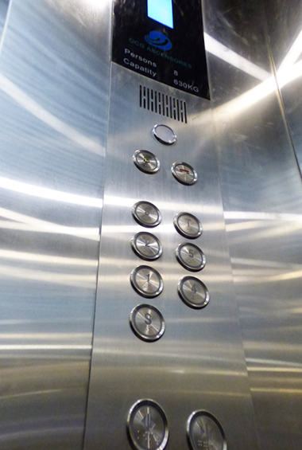
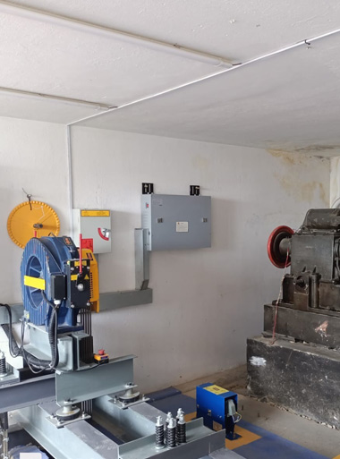
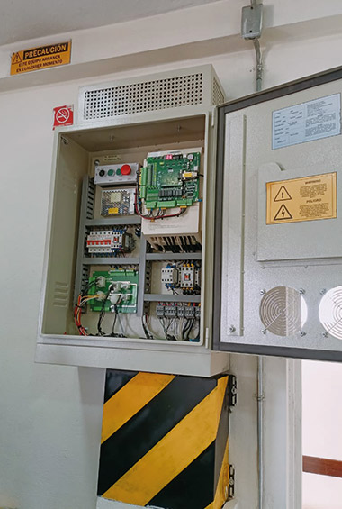
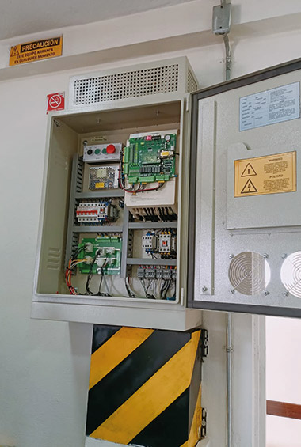
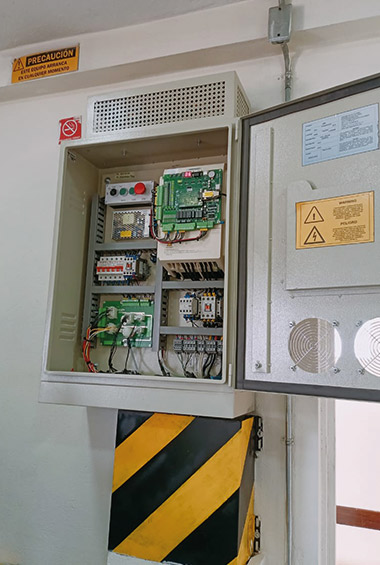
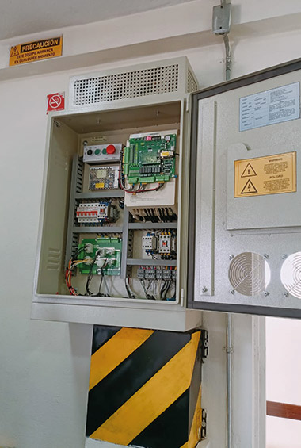

.jpg) 

.jpg)

Diseñamos y fabricamos ascensores a la medida de las necesidades y requerimientos de los usuarios y de las edificaciones. Garantizamos alta seguridad, continua funcionalidad, confort y confianza en cada viaje. Aplicamos de manera estricta la normativa y la legislación que regula el diseño, construcción e instalación de ascensores.
Contamos con un efectivo y confiable servicio de mantenimiento preventivo y correctivo de ascensores de todas las marcas y para todos los usos: Vivienda, Centros comerciales, Industria, Servicios de salud
Este servicio permite sacar el mayor rendimiento a su ascensor actual y darle una nueva vida y una apariencia renovada Obtenga una mejor experiencia para los usuarios del ascensores y mayores beneficios para el propietario:
Aplicamos la normativa vigente y actualizada en los procesos de diseño y construcción de ascensores como de sus componentes de seguridad. Además, aplicada a los procesos de instalación, mantenimiento y modernización. Seguimos la normativa en sus regulaciones especificas en diferentes ámbitos competenciales: comerciales o institucionales de alto tráfico y/o residenciales.
Contamos con un efectivo y confiable servicio de mantenimiento preventivo y correctivo de ascensores de todas las marcas y para todos los usos
